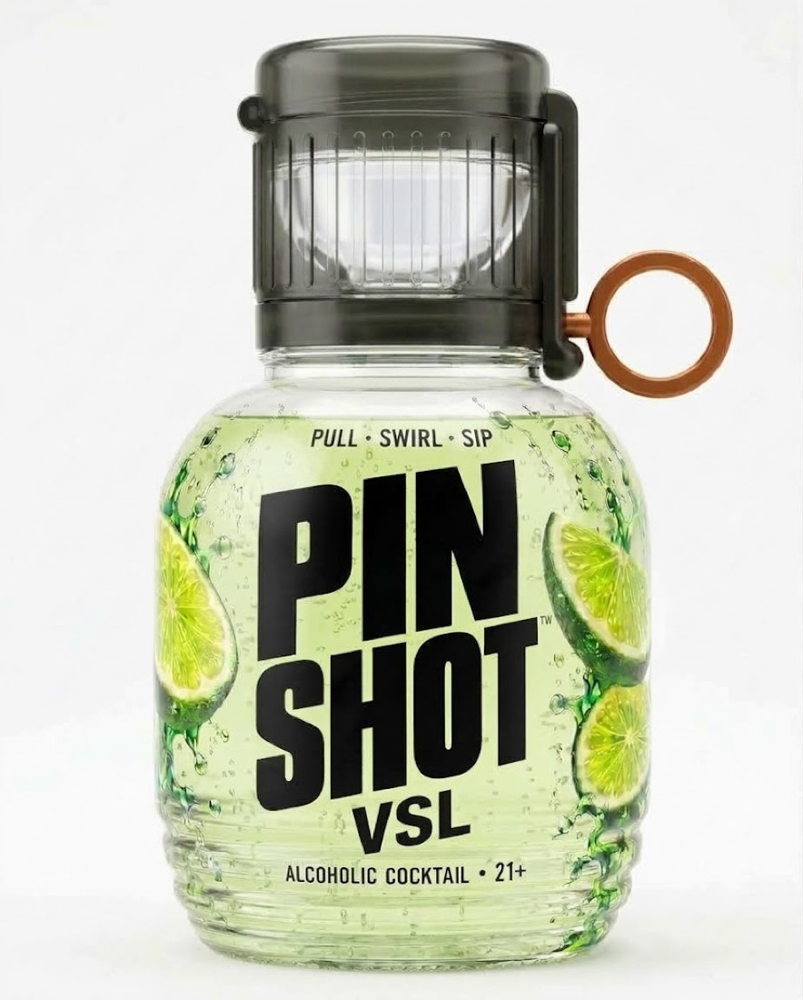
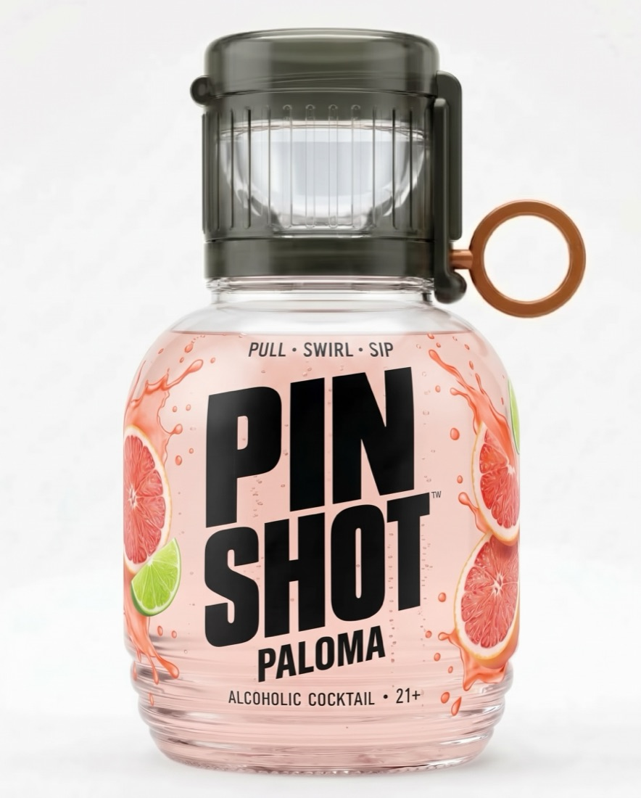
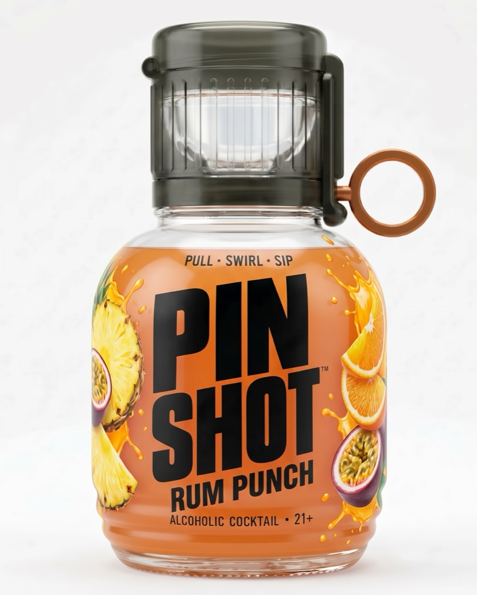
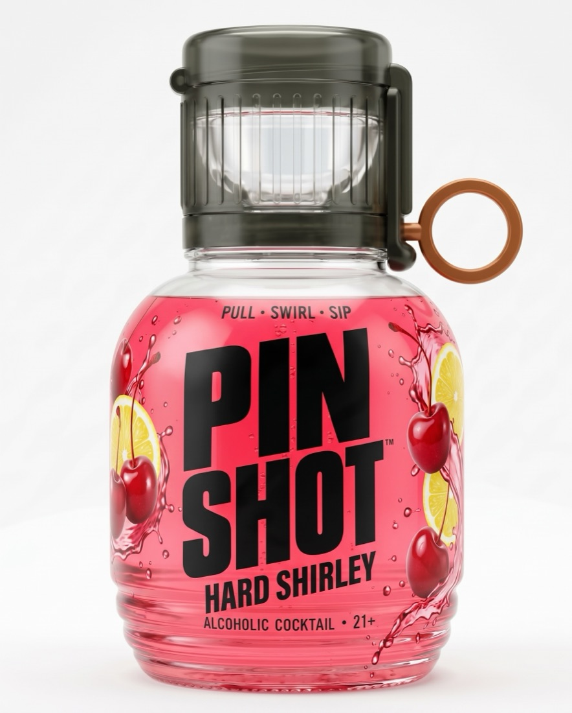
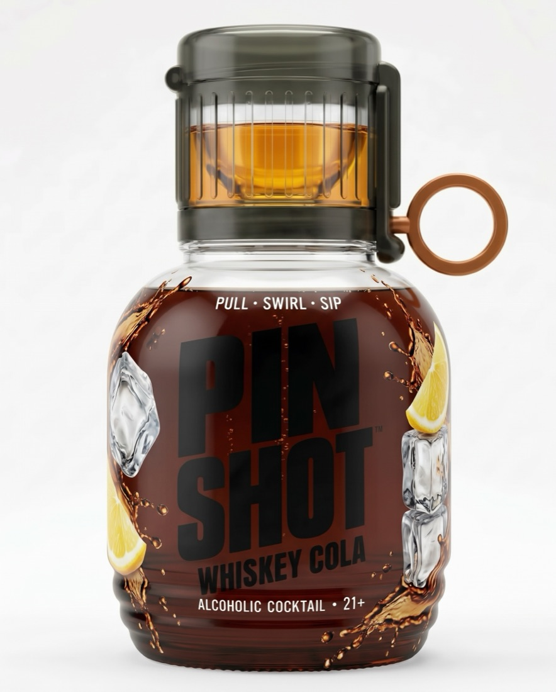
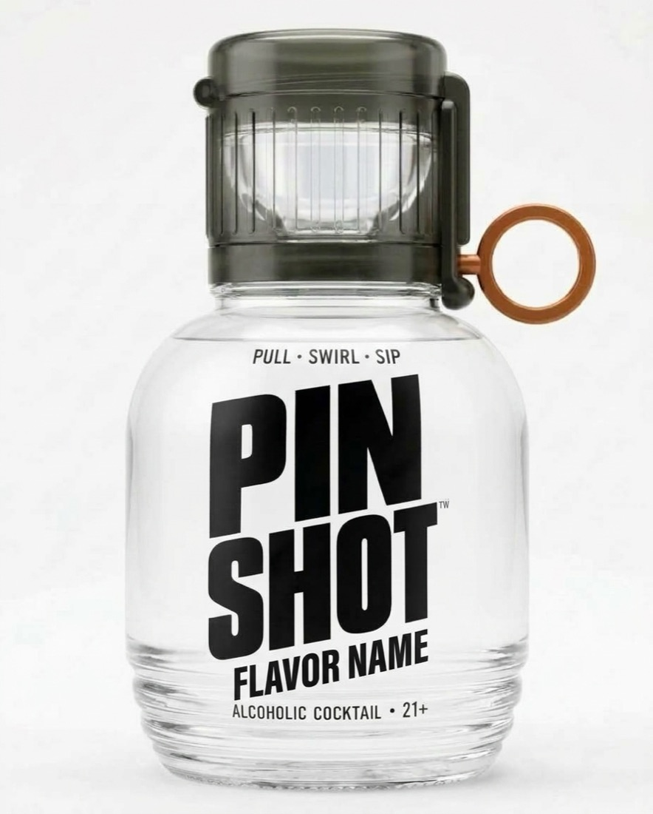

Each direction below is a mocked homepage hero built with your real bottle photos, followed by its palette, type, voice and where it fits best. All four keep the constants from the bottle: the condensed black PIN SHOT wordmark, the copper-orange ring, and PULL · SWIRL · SIP.
The site reads like the product's operating instructions. Blueprint grid, numbered callouts, mono type. The mechanism is the hero.
A full 44 mL shot is sealed in the cap behind a gate. Pull the ring, the gate slides out, and the shot falls into the mixer. Then the lid flips open.
See the mechanism →
① 44 mL shot ② Gate pin ③ 311 mL mixerDrafting paper · ink · signal orange · grid · flavor color used only on bottles
Archivo Condensed
IBM Plex Mono for everything else
Pull ring. Wait one second. Swirl. Drink.Short, numbered, matter-of-fact. Real units everywhere.
Nightlife energy. Dark page, the bar photo, flavor colors glowing like back-bar lights. Big Anton type straight off the label.
A real shot sealed in the cap. One pull drops it into the mix and pops the lid.
See the lineup →Back-bar black · white · lime · cherry · ember. Every flavor color glows.
Anton
Manrope for body and buttons
The shot's already in it.Confident and short. Sounds like a bartender, not an engineer.
Daylight and flavor-first. Every flavor gets its own color block, chunky friendly type, a sticker or two. Feels like grabbing one from the cooler.
A real shot sits in the cap. Pull the ring and it drops into the mixer below.
Pick your flavor →
Paloma
Rum Punch
Hard Shirley
Whiskey ColaCream white · ink · each flavor's own color, used as big blocks
Bricolage Grotesque
DM Sans for body
Cracks open like a soda. Tastes like a bar made it.Warm, playful, easy to say out loud.
Quiet and premium. Lots of white space, one bottle at a time, an elegant serif with the copper of the ring as the only accent.
The shot waits in the cap above the mixer. Pull the copper ring and it drops in, measured to the milliliter.
How the gate works
Gallery white · graphite · ring copper · hairline · slate
Instrument Serif
Instrument Sans for body
Measured to the milliliter.Calm, precise, a little proud of the engineering.
Most good sites end up as one direction with a borrowed piece of another, for example After Dark's hero with Field Manual's mechanism section. Tell me what you like and what you don't, and I'll build the full site in that direction with the live mechanism demo, the lineup and your photos.
Constants in every direction: PIN SHOT wordmark · copper-orange ring · PULL · SWIRL · SIP · 21+